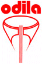
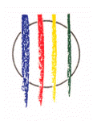
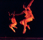

HOME FUNDEF
Entes Asociados

O D I L A
FUNDACIF

Fundación
Fredy Reyna

Ballet Coreoarte
Estos organismos están estrechamente vinculados a FUNDEF en un sentido de cooperación institucional.
Centros de Trabajo de Cultura Popular
Programa del Instituto Andino
de Artes Populares
IADAP
,
Convenio Andrés Bello